数据组合
学习目标
- 能够使用 concat 拼接组合数据
- 能够使用 merge 关联组合数据
- 能够使用 join 关联组合数据
1. 数据组合简介
在动手进行数据分析工作之前，需要进行数据清理工作，数据清理的主要目标是：
- 每个观测值成一行
- 每个变量成一列
- 每种观测单元构成一张表格
数据整理好之后，可能需要多张表格组合到一起才能进行某些问题的分析
- 比如：一张表保存公司名称，另一张表保存股票价格
- 单个数据集也可能会分割成多个，比如时间序列数据，每个日期可能在一个单独的文件中
2. concat 拼接数据
2.1 方法简介
基本格式：
| 方法 | 说明 |
|---|---|
pd.concat([df1, df2, ..]) |
多个数据集(DataFrame或Series)之间按行标签索引 或列标签索引拼接，默认是outer，可以设置为inner |
2.2 行拼接：按照列标签索引对齐
DataFrame和DataFrame 进行拼接：
注意：行拼接时，无法对齐的列，默认在拼接后的数据中会填充为 NaN，因为默认拼接是 outer 拼接
1）加载数据集
df1 = pd.read_csv('./data/concat_1.csv')
df2 = pd.read_csv('./data/concat_2.csv')
df3 = pd.read_csv('./data/concat_3.csv')

2）将 df1、df2和 df3 按照列标签对齐，进行行拼接
row_concat = pd.concat([df1, df2, df3])
row_concat

# 按照行位置获取数据
row_concat.iloc[3]
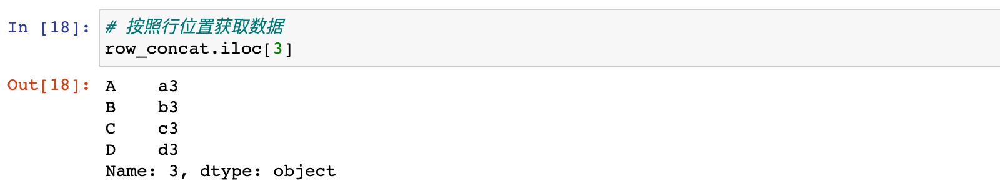
# 按照行标签获取数据
row_concat.loc[3]

3）concat 拼接数据时忽略原有数据的行标签
# ignore_index=True：表示 concat 拼接时忽略索引
pd.concat([df1, df2, df3], ignore_index=True)
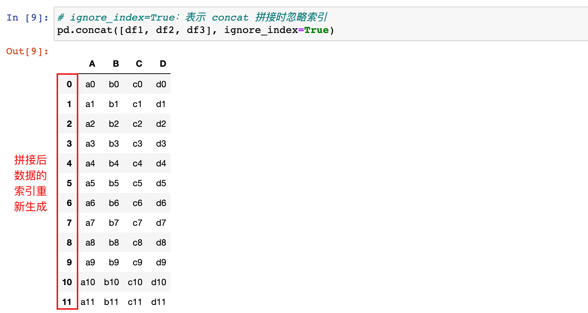
DataFrame 和 Series 进行拼接：
1）创建一个 Series 数据
new_series = pd.Series(['n1', 'n2', 'n3', 'n4'])
print(new_series)
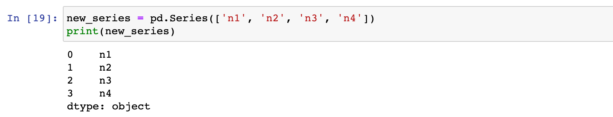
2）将 df1 和 new_series 按照列标签对齐，进行行拼接
pd.concat([df1, new_series])

2.3 列拼接：按照行标签索引对齐
注意：列拼接时，无法对齐的行，默认在拼接后的数据中会填充为 NaN，因为默认拼接是 outer 拼接
DataFrame和DataFrame 进行拼接：
1）将 df1、df2和 df3 按照行标签对齐，进行列拼接
pd.concat([df1, df2, df3], axis=1)

DataFrame 和 Series 进行拼接：
1）创建一个 Series 数据
new_series = pd.Series(['n1', 'n2', 'n3', 'n4'])
print(new_series)
2）df1 和 new_series 按照行标签对齐，进行列拼接
pd.concat([df1, new_series], axis=1)
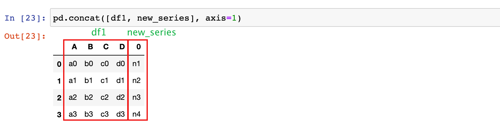
2.4 join 参数的设置
concat 方法的 join参数：
- 默认为 outer：无法对齐的行/列，默认在拼接后的数据中会填充为 NaN，因为默认拼接是 outer 拼接
- 设置为 inner：只有能够对齐的行/列，才会出现在拼接的结果中
1）修改 df1 和 df3 的 columns 列标签
修改之前：

df1.columns = ['A', 'B', 'C', 'D']
df3.columns = ['A', 'C', 'F', 'H']

2）将 df1 和 df3 按列标签对齐，进行行拼接，默认 outer
pd.concat([df1, df3])
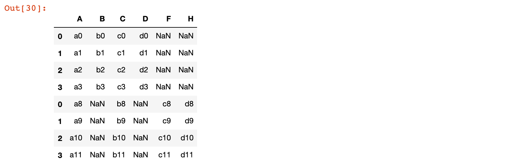
3）将 df1 和 df3 按列标签对齐，进行行拼接，设置 join='inner'
pd.concat([df1, df3], join='inner')
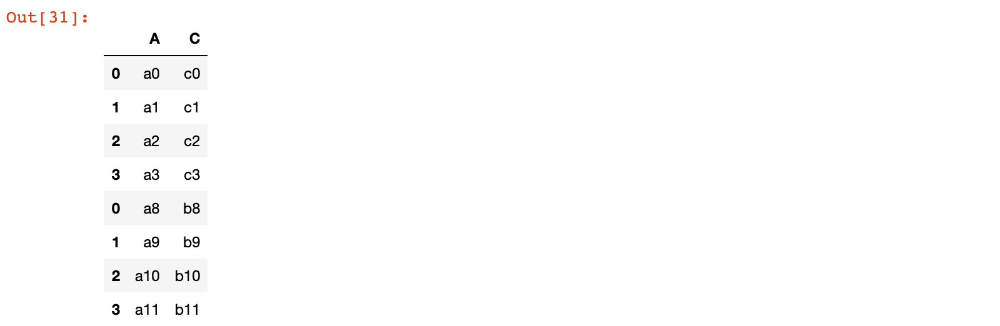
3. merge 关联数据
3.1 方法简介
merge 方法类似于 sql 中的 join 语句，用于两个数据集之间按照行标签列或列标签列进行连接，默认是inner，可以设置为：left、right、outer
基本格式：
| 方法 | 说明 |
|---|---|
pd.merge(left, right, ...)或 left.merge(right, ...) |
两个数据集直接进行关联操作 |
merge函数的参数：
- left：左侧数据集
- right：右侧数据集
- how：关联方式，默认为 inner，可以设置为：left、right、outer
- on='列名'： 左侧和右则数据以哪一列进行关联操作，左右两侧列名相同时才指定 on 参数
- left_on='左侧列名' 和 right_on='右侧列名'：左右两侧关联时，列名不同时使用
- left_index=False：默认为 False，设置为 True，表示左侧的行标签列和右侧的数据进行关联
- right_index=False：默认为 False，设置为 True，表示左侧的数据和右侧的行标签列进行关联
3.2 merge 示例
1）分别加载 departments.csv 和 employees.csv 数据
# 加载部门数据
departments = pd.read_csv('./data/departments.csv')
departments
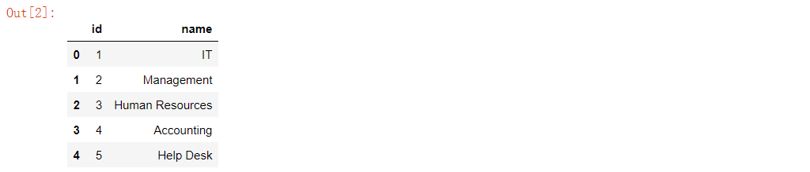
# 查看数据列的结构
departments.info()
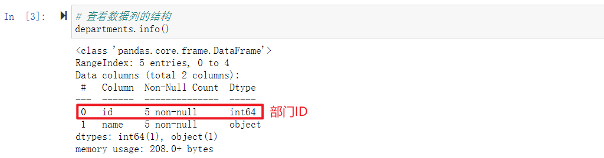
# 加载员工数据
employees = pd.read_csv('./data/employees.csv')
employees.head()
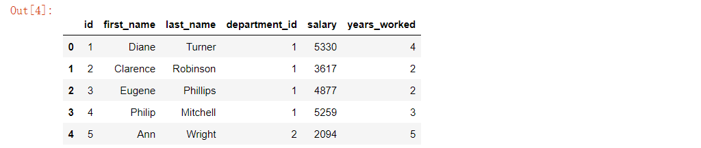
# 查看数据列的结构
employees.info()
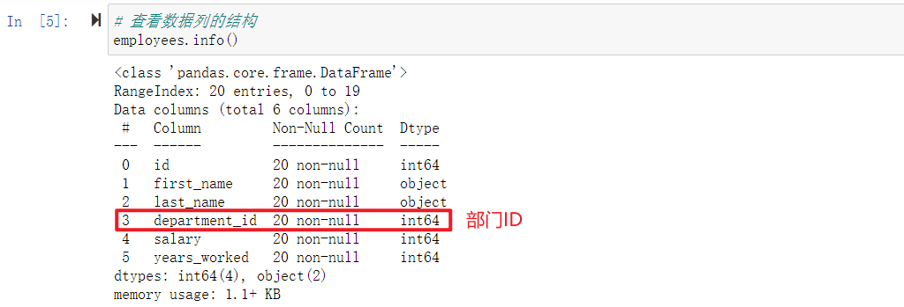
2）将部门数据和员工数据按照部门 ID 进行关联
# 部门和员工数据进行关联
merge_data = pd.merge(departments, employees, left_on='id', right_on='department_id')
或
merge_data = departments.merge(employees, left_on='id', right_on='department_id')
merge_data.head()
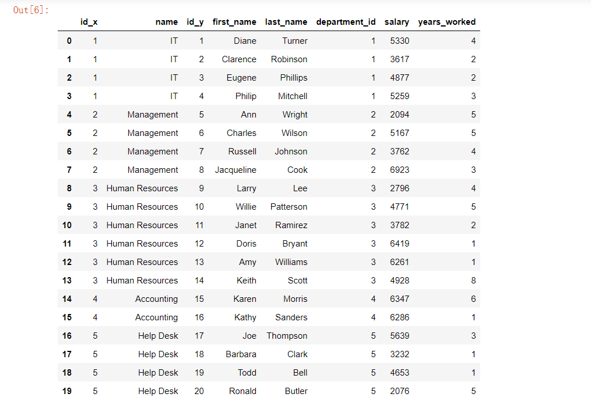
4. join 关联数据
4.1 方法简介
join 方法类是 merge 方法的一个特殊情况，被调用的数据集按照行标签列或列标签列和另一个数据集的行标签列进行关联，默认是left，可以设置为：right，inner、outer
基本格式：
| 方法 | 说明 |
|---|---|
df.join(other, ...) |
左侧数据集的行标签列或列标签列和右侧数据集的行标签列进行关联操作 |
join函数的参数：
- other：右侧数据集
- how：关联方式，默认为 left，可以设置为：right、inner、outer
- on='左侧列标签'： 左侧数据集的列标签名称，on省略时，默认为左侧数据行标签列
- lsuffix：关联后的数据中出现相同列名时，lsuffix指定左侧数据集出现相同列名的后缀
- rsuffix：关联后的数据中出现相同列名时，rsuffix指定右侧数据集出现相同列名的后缀
4.2 join 示例
4.2.1 加载数据集
1）加载股票数据集
stock_2016 = pd.read_csv('./data/stocks_2016.csv')
stock_2017 = pd.read_csv('./data/stocks_2017.csv')
stock_2018 = pd.read_csv('./data/stocks_2018.csv')
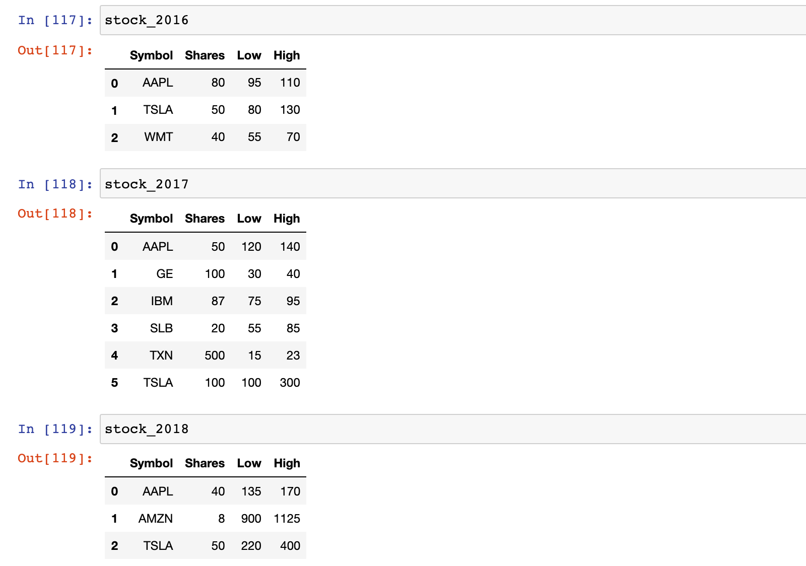
4.2.2 join 示例
1）示例：stock_2016 和 stock_2017 按照行标签进行关联，设置为 outer 连接
# 示例：stock_2016 和 stock_2017 按照行标签进行管理，设置为 outer 连接
stock_2016.join(stock_2017, lsuffix='2016', rsuffix='2017', how='outer')
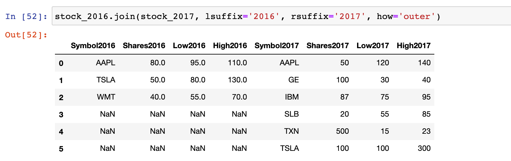
2）示例：stock_2016 和 stock_2018 按照 Symbol 进行关联
stock_2016.join(stock_2018.set_index('Symbol'), lsuffix='2016', rsuffix='2018', on='Symbol')

总结
- 能够使用 concat 拼接组合数据
pd.concat([df1, df2, ..])：多个数据集(DataFrame或Series)之间按行标签索引或列标签索引拼接，默认是outer，可以设置为inner
- 能够使用 merge 关联组合数据
pd.merge(left, right, …)：merge 方法类似于 sql 中的 join 语句，用于两个数据集之间按照行标签列或列标签列进行关联，默认是inner，可以设置为：left、right、outer
- 能够使用 join 关联组合数据
df.join(other, ...)：join 方法类是 merge 方法的一个特殊情况，被调用的数据集按照行标签列或列标签列和另一个数据集的行标签列进行关联，默认是left，可以设置为：right，inner、outer